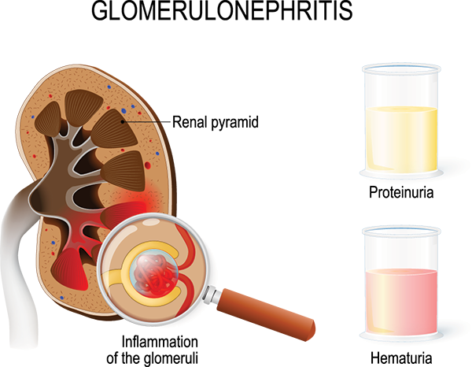

Glomerulonephritis

CAUSES
Causes may include:
- Genetics, meaning it runs in the family (this is rare).
- Anti-GBM disease (formerly Goodpasture syndrome), a group of diseases affecting the lungs and kidneys.
- Secondary to endocarditis, an infection in the heart valves.
- Secondary to other viral infections, such as strep throat, HIV or hepatitis C.
- Problems with the immune system attacking healthy parts of the body, such as with lupus.
- Rare diseases that inflame blood vessels like granulomatosis with polyangiitis (formerly Wegener’s disease), microscopic polyangiitis, Henoch-Schönlein Purpura, or eosinophilic granulomatosis with polyangiitis (formerly Churg-Srauss Syndrome).
SYMPTOMS
Symptoms can include:
- Blood in the urine, which may make the pee look brown, pink or red.
- Hypertension (high blood pressure) or shortness of breath.
- Pain in the joints or abdomen (belly area).
- Peeing less often or more often than normal.
- Swelling in the legs or face.
- Urine that’s foamy.
DIAGNOSIS
Glomerulonephritis may not produce symptoms. That’s why it’s often discovered during tests for another problem. If a healthcare provider suspects you have glomerulonephritis, you may have the following tests:
- Urine test: This test will determine if you have protein or blood in your urine.
- Blood test: This test will measure the level of creatinine (waste product filtered by the kidneys) in a sample of your blood.
- Kidney biopsy: For a kidney biopsy, a healthcare provider will use a needle to remove a tiny piece of kidney tissue. The tissue gets examined under a microscope.
- Ultrasound: An ultrasound checks the size of your kidneys, looks for blockages and identifies any problems.
TREATMENTS
Treatment depends on what caused the glomerulonephritis and the damage done to the kidney filters. A mild case may not need any treatment. At other times, your healthcare provider may recommend:
- Changes to your diet so that you eat less protein, salt and potassium.
- Corticosteroids such as prednisone.
- Dialysis, which helps clean the blood, remove extra fluid and control blood pressure.
- Diuretics (water pills) to reduce swelling.
- Immunosuppressants, if a problem with the immune system causes the glomerulonephritis.
- Medicine to lower your blood pressure, such as angiotensin-converting enzyme (ACE) inhibitors or angiotensin II receptor blockers.
- Plasmapheresis, a special process that filters protein from the blood.